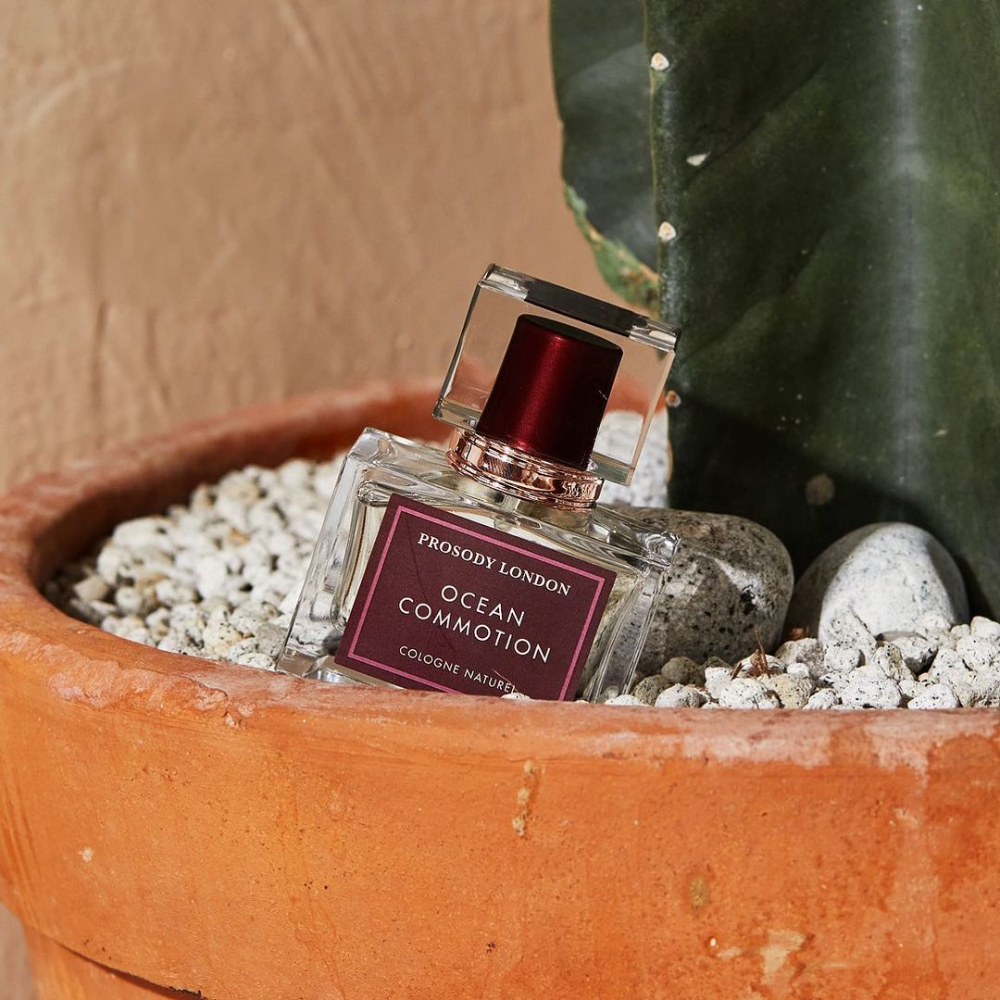

메인 배너
소개하는 말
프로소디 런던은,
Nature Organic을 기반으로 향을 추출하는 오가닉 니치 퍼퓸 & 프레그런스 브랜드입니다.
프로소디의 이야기는 식물이 인간에게 줄 수 있는 치유의 긍정적인 영향과 바이탈 에센스, 꽃과 허브의
연금술로부터 받은 영감을 바탕으로 만들어진 자연 친화적인 향들의 조화로부터 시작되었습니다.
아름다우면서 직관적이고 지속성이 유지되는 복합적인 향을 선사하는 것이 우리의 모토입니다.

베스트 상품 소개
PROSODY LONDON's Pick
프로소디 런던의 BEST 제품들을 만나보세요.-
비밥 얼루어
83,000원
엘라 피츠제럴드의 아름다운 목소리에서 영감을 받아 매끄럽고 매력적인 재즈를 표현한 향으로, 장미와 네롤리의 유혹적인 향이 샐러리 씨앗의 레더 어코드와 조화를 이루어 고급스럽고 부드러운 느낌을 선사합니다.
-
베리 블릿츠
83,000원
프루티한 블루베리와 라즈베리, 그리고 매력적인 이끼가 어우러져 프레쉬하면서 달콤한 느낌을 선사합니다.
-
리솜 린든
158,000원
상큼한 라임과 싱그러운 린덴블로썸, 그리고 로맨틱한 불가리안 로즈가 하모니를 이루어 마음에 평온을 선사하는 트로피컬 플로럴향
-
주니퍼 저니 캔들
98,000원
화학물과 파라빈 무첨가 제품으로, 최고급 천연 에센셜 오일을 사용하여 향의 퍼짐성과 지속력이 좋고 버닝타임은 70시간이며 반경 60미터까지 향이 퍼진다.
-
페이퍼 플라워 팬 디퓨저
118,000원
곡물성 알코올을 사용한 천연 디퓨저. 총 7개의 천연 사탕수수 스틱이 들어 있으며, 향은 약 6개월 동안 지속된다.
-
 남아 있는 나날
남아 있는 나날글 | 가즈오 이시구로
젊은 날의 사랑은 지나갔지만 남아 있는 날들에도 희망은 있다. 인생의 황혼 녘에 비로소 깨달은 삶의 가치와 잃어버린 사랑 그 허망함과 애잔함을 내밀하게 그려 낸 가즈오 이시구로의 『남아 있는 나날』(송은경 번역)이 민음사에서 전면적 번역 개정을 거쳐 새로운 디자인과 판형으로 출간되었다. 2017년 노벨문학상을 수상하며 일본계 영국 작가로 현대 세계 문학을 대표하는 거장이 된 가즈오 이시구로의 『남아 있는 나날』은
출판사 | 민음사 -
 나를 보내지 마
나를 보내지 마글 | 가즈오 이시구로
2017년 노벨 문학상 수상자이자 현대 영미권 문학을 이끌어 가는 거장 가즈오 이시구로의 대표작, 『나를 보내지 마』(김남주 번역)가 민음사에서 전면적 번역 개정을 거쳐 새로운 디자인과 판형으로 출간되었다. 여느 시골 학교와도 같이 평온해 보이지만 외부와의 접촉이 일절 차단된 ‘헤일셤’. 어느 날 루스 선생님은 학생들에게, 그들의 운명이 이미 정해져 있다는 사실을 알려준다. 선생님의 충격적인 발언으로 아이들은 자신들의 존재성에 대해 진지하게 생각하게 되는데
출판사 | 민음사 -
 녹턴
녹턴글 | 가즈오 이시구로
음악을 문학 속으로 끌어들여 절묘하게 녹여 낸 이 작품은, 크루너 가수가 부르는 나직한 세레나데부터 할리우드의 호텔 방에 울려 퍼지는 색소폰, 베네치아의 광장을 메운 첼로의 「대부」 테마곡까지 음악이 흐르는, 사랑과 세월에 관한 다섯 편의 이야기를 담고 있다. “마치 다섯 악장으로 이루어진 음악 작품처럼 통합적으로 구상”(《옵서버》)된 이 작품은 무엇보다 음악이 절정에 달하는 순간, 인생에 대한 성찰이 빛을 발한다. 젊은 시절 한때 싱어송라이터를 꿈꾸었던 이시구로의
출판사 | 민음사
인스타그램 소식
-

99.9% 네츄럴 & 오가닉 니치 퍼퓸 , 프레그런스 브랜드 프로소디 런던🕰 순수함과 익스클루시브함이 공존하는 독특한 호사를 향수로써 표현합니다.💐
2021.09.10 -
PROSODY LONDON interact with animals.❤️ 빛과 그림자처럼 따라다니는 과학·산업 발전과 동물실험의 윤리성.
2021.09.02 -

해변에 있는듯한 시원한 항으로 이끼,해초의 오셔닉한 노트들과 비치나무의 우디함이 조화를 이루어 바다의 느낌을 선사합니다.✨
2021.08.31 -
티트리 라군 핸드 케어 스프레이✨ 호주산 레몬향 티트리 오일을 사용하기 때문에 티트리 고유의 강한 향이 나지않고, 싱그럽고 시원한 향을 머금고 있습니다.🍋
2021.08.17